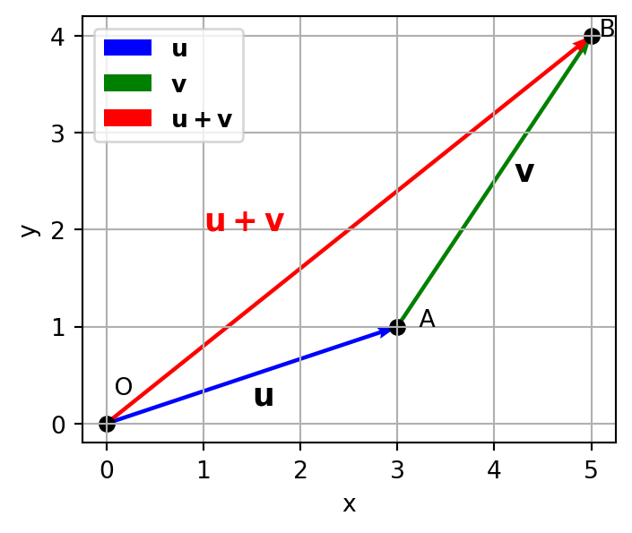
Chapter 2 Basic Vector Arithmetic and Newton’s Laws
Mathematical modelling frequently requires the use of quantities that describe both the magnitude and direction of physical phenomena. For example, the velocity of a moving vehicle, the force acting on a particle, and the heat flux through a solid are all quantities that possess both magnitude and direction.
Such quantities are represented mathematically using vectors, while quantities possessing only magnitude are known as scalars. A sound understanding of vector arithmetic is therefore essential before developing mathematical models based on Newton’s laws and conservation principles.
Part 1: Basic Vector Arithmetic
Scalars and Vectors
Physical quantities are generally classified into two categories.
Scalar: A quantity with magnitude only. Examples include Mass, Time, Temperature, Energy, Pressure, Density.
Vector: A quantity with both magnitude and direction. Examples include Velocity, Force, Displacement, Acceleration.
Throughout this unit vectors will be represented by bold symbols, for example
\[ \mathbf{v}, \mathbf{F}, \mathbf{r}, \mathbf{a}. \]
Their magnitudes are denoted by
\[ |\mathbf{v}|, |\mathbf{F}|, |\mathbf{r}|, |\mathbf{a}\dots| \]
Geometric Representation of a Vector
A vector is represented graphically by a directed line segment.
- The length of the arrow represents the magnitude.
- The arrowhead indicates the direction.
- The initial point is called the tail.
- The terminal point is called the head.
Suppose a vector begins at point \(A\) and ends at point \(B\). Then the vector is written as
\[ \overrightarrow{AB}. \]
Its magnitude is \(|\overrightarrow{AB}|\).
Cartesian Representation and Vector Operations
In three-dimensional Cartesian coordinates, a vector is represented by its components.
Suppose \(A=(x,y,z).\) Then the position vector of \(A\) measured from the origin is
\[ \mathbf r = x\mathbf i +y\mathbf j +z\mathbf k, \]
where \(\mathbf i, \mathbf j, \mathbf k\) are the unit vectors in the \(x, y, z\) directions respectively.
Equivalently, \(\mathbf r =(x,y,z).\)

Magnitude of a Vector
The length (or magnitude) of a vector \(\mathbf a=(a_x,a_y,a_z)\) is \[ |\mathbf a| = \sqrt{a_x^2 + a_y^2 + a_z^2}. \]
TipExample
Find the magnitude of the vector \(\mathbf a = (3, 4, 5)\).
\[ |\mathbf a| = \sqrt{3^2 + 4^2 + 5^2} = \sqrt{9 + 16 + 25} = \sqrt{50} = 5\sqrt{2}. \]
Equality of Vectors
Two vectors are equal if they have the same magnitude, and the same direction, regardless of where they are located.
TipExample
\[ \mathbf a = (1, 2, 3), \quad \mathbf b = (1, 2, 3) \implies \mathbf a = \mathbf b. \]
even if the vectors originate from different points.
Vector Addition
If \(\mathbf u=(u_1,u_2,u_3),\) and \(\mathbf v=(v_1,v_2,v_3),\) then
\[ \boxed{ \mathbf u+\mathbf v = (u_1+v_1,\; u_2+v_2,\; u_3+v_3). } \]
Vector addition is performed by adding the corresponding components.
TipExample
Let
\[ \mathbf u=(1,0), \qquad \mathbf v=(1,1). \]
Then
\[ \mathbf u+\mathbf v = (1+1, 0+1) = (2, 1). \]
Geometric Interpretation
Vector addition can be visualised using either the parallelogram law or the triangle law.
- Triangle Law: To add two vectors, place the tail of the second vector at the head of the first vector. The resultant vector is the one that starts at the tail of the first vector and ends at the head of the second vector.
- Parallelogram Law: To add two vectors, place them so their tails coincide. The resultant vector is the diagonal of the parallelogram formed by the two vectors.
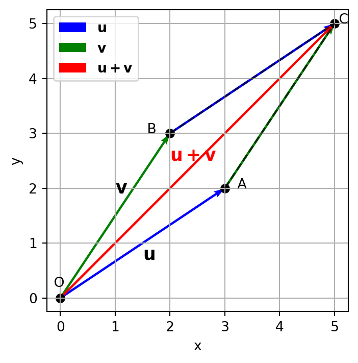
Vector Subtraction
Vector subtraction is defined as
\[ \mathbf u - \mathbf v = \mathbf u + (-\mathbf v). \]
The vector \(-\mathbf v\) is the vector with the same magnitude as \(\mathbf v\) but in the opposite direction.
TipExample
Let \(\mathbf u=(5,4), \,\, \mathbf v=(2,1).\) Then
\[ \mathbf u - \mathbf v = (5-2, 4-1) = (3, 3). \]
Scalar Multiplication
Multiplying a vector by a scalar changes its magnitude. If \(\lambda\in\mathbb R,\) then
\[ \boxed{ \lambda\mathbf a = (\lambda a_x,\lambda a_y,\lambda a_z). } \]
If \(\lambda>1,\) the vector becomes longer.
If \(0<\lambda<1,\) the vector becomes shorter.
If \(\lambda<0,\) the direction is reversed.
TipExample
Let \(\mathbf a=(2,-1).\) Then
\[ 2\mathbf a = (4,-2), \quad 0.5\mathbf a = (1,-0.5), \quad -1\mathbf a = (-2,1). \]
Unit Vectors
A unit vector has magnitude equal to one. The standard Cartesian unit vectors are
\[ \mathbf i=(1,0,0), \quad \mathbf j=(0,1,0), \quad \mathbf k=(0,0,1). \]
Any vector
\[ \mathbf a = (a_x,a_y,a_z) \]
may be written as
\[ \boxed{ \mathbf a = a_x\mathbf i + a_y\mathbf j + a_z\mathbf k.} \]
The unit vector in the direction of \(\mathbf a\) is
\[ \boxed{ \hat{\mathbf a} = \frac{\mathbf a}{|\mathbf a|}. } \]
TipExample
Let \(\mathbf a=(3,4).\) Since \(|\mathbf a|=5,\) the unit vector is
\[ \hat{\mathbf a} = \frac{1}{5}(3,4) = \left(\frac{3}{5},\frac{4}{5}\right). \]
Position Vectors
The position of a particle relative to the chosen origin is described by the .
Suppose a particle is located at \(P(x,y,z).\) Then the position vector of \(\mathbf{r}(t)\) is
\[ \mathbf r(t) = x(t)\mathbf i + y(t)\mathbf j + z(t)\mathbf k. \]
Alternatively,
\[ \mathbf r(t) = (x(t),y(t),z(t)). \]
TipExample
If \(P=(3,4,2),\) then the position vector is \[ \mathbf r = 3\mathbf i + 4\mathbf j + 2\mathbf k = (3,4,2). \]
Its distance from the origin is
\[ |\mathbf r| = \sqrt{3^2 + 4^2 + 2^2} = \sqrt{29}. \]
Displacement Vectors
Suppose a particle moves from \(P_1(x_1,y_1,z_1)\) to \(P_2(x_2,y_2,z_2).\) The change in position is called the ,
\[ \Delta \mathbf r = \mathbf r_2 - \mathbf r_1 = (x_2-x_1)\mathbf i + (y_2-y_1)\mathbf j + (z_2-z_1)\mathbf k. \]
Displacement is a vector quantity and should not be confused with the total distance travelled.
Velocity Vectors
Velocity describes how rapidly the position of a particle changes with time.
If the particle has position vector \(\mathbf {r}(t),\) its velocity is defined as
\[ \mathbf v = \frac{d\mathbf r}{dt}. \]
In Cartesian coordinates,
\[ \mathbf v = \dot{x}\mathbf i + \dot{y}\mathbf j + \dot{z}\mathbf k \quad \text{or} \quad \mathbf v = (\dot{x},\dot{y},\dot{z}). \]
The magnitude of the velocity, \(|\mathbf v|,\) is called the .
TipExample
Let \(\mathbf r(t) = (t, t^2, t^3).\) Then \[ \mathbf v(t) = \frac{d\mathbf r}{dt} = (1, 2t, 3t^2). \]
The speed is \[ |\mathbf v(t)| = \sqrt{1 + (2t)^2 + (3t^2)^2} = \sqrt{1 + 4t^2 + 9t^4}. \]
Acceleration Vectors
Acceleration describes how rapidly the velocity of a particle changes with time.
If the particle has velocity \(\mathbf {v}(t),\) its acceleration is defined as
\[ \mathbf a = \frac{d\mathbf v}{dt} = \frac{d^2\mathbf r}{dt^2}. \]
TipExample
Let \(\mathbf r(t) = (t, t^2, t^3).\) Then \[ \mathbf a(t) = \frac{d\mathbf v}{dt} = (0, 2, 6t). \]
Particle Motion on a Hyperbola
Describe the path of the particle, its velocity and its acceleration if a particle has position vector
\[ \mathbf{r}(t) = \left( a\cosh(\omega t), \; b\sinh(\omega t), \; 0 \right), \qquad 0\le t<\infty, \] where \(a\), \(b\) and \(\omega\) are positive constants.
The particle coordinates are
\[ x=a\cosh(\omega t), \qquad y=b\sinh(\omega t), \qquad z=0. \]
Since
\[ \cosh^2(\omega t)-\sinh^2(\omega t)=1, \]
we obtain
\[ \left(\frac{x}{a}\right)^2 - \left(\frac{y}{b}\right)^2 = 1. \]
Hence, the particle moves along the hyperbola
\[ \frac{x^2}{a^2} - \frac{y^2}{b^2} = 1, \]
which lies in the \(xy\)-plane and is centred at the origin.
Important
- For a left branch hyperbola, we can use the parametrization
\[ \mathbf {r}(t) = (-a\cosh(\omega t), b\sinh(\omega t), 0). \]
- If you want it shifted left/right, use
\[ \mathbf {r}(t) = (h - a\cosh(\omega t), b\sinh(\omega t), 0), \] where \((h,0)\) is the hyperbola center.
The velocity is obtained by differentiating the position vector.
\[ \mathbf{v}(t) = \frac{d\mathbf{r}}{dt} = \left( a\omega\sinh(\omega t), \; b\omega\cosh(\omega t), \; 0 \right). \]
Equivalently,
\[ \mathbf{v}(t) = (a\omega\sinh(\omega t), b\omega\cosh(\omega t), 0). \]
The speed is
\[ |\mathbf{v}(t)| = \sqrt{(a\omega\sinh(\omega t))^2 + (b\omega\cosh(\omega t))^2}. \]
Differentiating the velocity vector gives the acceleration.
\[ \mathbf{a}(t) = \frac{d\mathbf{v}}{dt} = \left( a\omega^2\cosh(\omega t), \; b\omega^2\sinh(\omega t), \; 0 \right). \]
In a pursuit problem, one object is constrained to follow another object in a specified manner. For example, a comet is attracted to a planet and moves with constant speed, always pointing towards the planet. The path of the comet is called a pursuit curve.
Let the comet move along a known path
\[ \mathbf r_A(t) = \bigl(x_A(t),y_A(t),z_A(t)\bigr), \]
and assume that the comet travels with constant speed \(v\). Since the velocity of the comet is always directed from the comet towards the planet, the direction of motion is parallel to
\[ \mathbf r_A(t)-\mathbf r(t). \]
Hence,
\[ \frac{d\mathbf r}{dt} = v\, \frac{\mathbf r_A(t)-\mathbf r(t)} {\left|\mathbf r_A(t)-\mathbf r(t)\right|}. \]
This is the governing equation for the pursuit curve.
In component form, this gives the system
\[ \frac{dx}{dt} = v \frac{x_A(t)-x(t)} {\sqrt{ \bigl(x_A(t)-x(t)\bigr)^2 + \bigl(y_A(t)-y(t)\bigr)^2 + \bigl(z_A(t)-z(t)\bigr)^2}}, \]
\[ \frac{dy}{dt} = v \frac{y_A(t)-y(t)} {\sqrt{ \bigl(x_A(t)-x(t)\bigr)^2 + \bigl(y_A(t)-y(t)\bigr)^2 + \bigl(z_A(t)-z(t)\bigr)^2}}, \]
and
\[ \frac{dz}{dt} = v \frac{z_A(t)-z(t)} {\sqrt{ \bigl(x_A(t)-x(t)\bigr)^2 + \bigl(y_A(t)-y(t)\bigr)^2 +\bigl(z_A(t)-z(t)\bigr)^2}}. \]
Given the initial position of the comet,
\[ \mathbf r(0) = \bigl(x(0),y(0),z(0)\bigr). \]
TipExample (Pursuit Curve)
Suppose a comet moves along the path
\[ \mathbf r_A(t) = \bigl(0.4 \cosh t, 0.7 \sinh t, 0\bigr), \qquad 0\le t<\infty, \]
At initial time \(t=0\), the comet is located at \((0.4, 0, 0)\) and a planet is located at the origin. The comet moves with constant speed \(v=1\) and its direction of motion is always pointed towards the planet. The governing equations for the pursuit curve are
\[ \begin{aligned} \frac{dx}{dt} &= \frac{0.4 \cosh t - x}{\sqrt{(0.4 \cosh t - x)^2 + (0.7 \sinh t - y)^2}}, \\ \frac{dy}{dt} &= \frac{0.7 \sinh t - y}{\sqrt{(0.4 \cosh t - x)^2 + (0.7 \sinh t - y)^2}}. \end{aligned} \]
The pursuit curve in Figure 4 is obtained by solving this system of differential equations with initial conditions numerically.
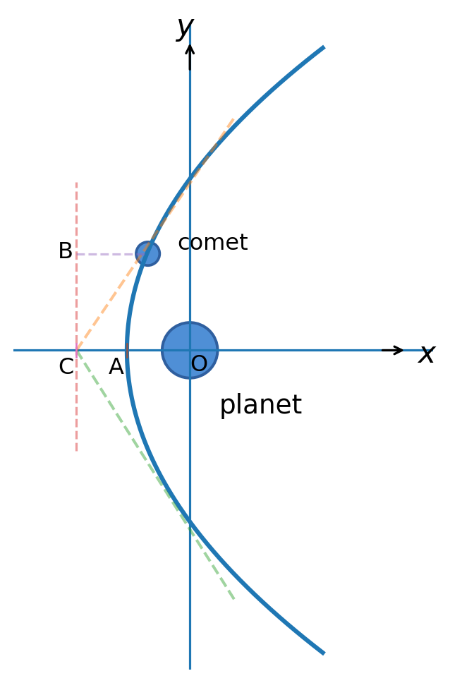
The comet moves with constant speed and its direction of motion is always pointed towards the planet, where \(AC=a\) and \(BC=b\).
Notes:
The following concepts form the foundation of particle kinematics.
| Quantity | Mathematical Definition |
|---|---|
| Position | \(\mathbf r=x\mathbf i+y\mathbf j+z\mathbf k\) |
| Displacement | \(\Delta\mathbf r=\mathbf r_2-\mathbf r_1\) |
| Velocity | \(\mathbf v=\dfrac{d\mathbf r}{dt}\) |
| Acceleration | \(\mathbf a=\dfrac{d\mathbf v}{dt} =\dfrac{d^2\mathbf r}{dt^2}\) |
These quantities provide the mathematical description of particle motion and form the basis for Newton’s laws of motion, which relate the motion of a particle to the forces acting upon it.
Part 2: Newton’s Laws of Motion and Applications
Newton’s Laws of Motion
In the seventeenth century, Sir Isaac Newton formulated three fundamental laws that describe the motion of particles under the action of forces.
These laws form the foundation of classical mechanics and provide the basis for many mathematical models in engineering and science.
By combining Newton’s laws with appropriate force models, we can derive differential equations governing the motion of particles, rigid bodies and continua.
Before introducing Newton’s laws, we first define two important physical quantities.
Mass is a measure of the amount of matter contained in a body. It is defined by
\[ m=\rho V, \]
where where \(m\) is the mass (kg), \(\rho\) is the density (kg/m\(^3\)), \(V\) is the volume (m\(^3\)).
Momentum is a measure of the motion of a body. The linear momentum of a particle is defined as the product of its mass and velocity, It is defined by
\[ \mathbf p = m\mathbf v, \]
where \(\mathbf p\) is the momentum (kg·m/s), \(m\) is the mass (kg), and \(\mathbf v\) is the velocity (m/s).
Newton’s First Law (Law of Inertia)
A particle remains at rest or continues to move with constant velocity in a straight line unless acted upon by a resultant external force.
This law introduces the concept of inertia.
If the resultant force is zero,
ImportantNewton’s First Law
\[ \sum\mathbf F=\mathbf0, \]
then
\[ \mathbf a=\mathbf0, \quad \text{and consequently}\quad \mathbf v=\text{constant}, \]
the particle’s velocity is constant.
TipExample:
A hockey puck sliding on a perfectly frictionless surface continues moving at constant speed until another force acts on it.
Newton’s Second Law
The rate of change of momentum of a particle is equal to the resultant external force acting on the particle.
Mathematically,
\[ \boxed{ \sum\mathbf F = \frac{d\mathbf p}{dt}. } \]
For constant mass,
\[ \mathbf p=m\mathbf v, \]
so that
ImportantNewton’s Second Law
\[ \sum\mathbf F = m\frac{d\mathbf v}{dt} = m\mathbf a. \]
This is the fundamental equation used throughout engineering mechanics.
The equation may also be written as
\[ m\frac{d^2\mathbf r}{dt^2} = \sum\mathbf F. \]
Hence, Newton’s Second Law naturally leads to a second-order ordinary differential equation for the particle’s position.
SI Units
Throughout this unit we shall use the SI system of units.
| Quantity | SI Unit |
|---|---|
| Length | metre (m) |
| Mass | kilogram (kg) |
| Time | second (s) |
| Force | newton (N) |
| Velocity | m/s |
| Acceleration | m/s\(^2\) |
TipExample:
A force of \(20\, \mathrm N\) acts on a particle of mass \(5\, \mathrm{kg}.\)
Using Newton’s Second Law,
\[ \mathbf a = \frac{\mathbf F}{m}, \]
the acceleration is
\[ a = \frac{20}{5} = 4\ \mathrm{m/s^2}. \]
Newton’s Third Law
For every action there is an equal and opposite reaction.
Whenever two bodies interact, the force exerted by the first body on the second is equal in magnitude and opposite in direction to the force exerted by the second body on the first.
If body \(A\) exerts a force on body \(B\),
\[ \mathbf F_{AB}, \]
then body \(B\) exerts a force on body \(A\),
ImportantNewton’s Third Law
\[ \mathbf F_{BA} = -\mathbf F_{AB}. \]
These forces always occur in pairs and act on different bodies.
Newton’s Third Law on a horizontal Plane
Consider a block resting on a horizontal table.
- The block exerts a downward force on the table equal to its weight.
- The table exerts an upward force on the block equal in magnitude and opposite in direction to the block’s weight.
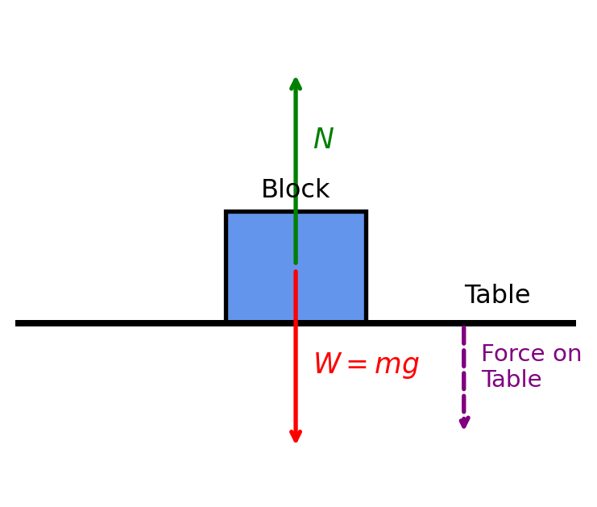
Figure 5 illustrates a mass resting on a horizontal table. The block exerts a downward force (\(W=mg\)) on the table equal to its weight, and the table exerts an equal and opposite upward force (\(N\)) on the block. If the block remains at rest,
\[ N=mg, \]
where \(N\) is the normal force, \(m\) is the mass of the block, and \(g\) is the acceleration due to gravity.
TipExample: Block on a Table
A block of mass \(5\,\text{kg}\) rests on a horizontal table. Determine the normal force exerted by the table on the block. Hence, state the reaction force exerted by the block on the table.
Given \(m=5\,\text{kg}, \, g=9.8\,\text{m/s}^2.\) The forces acting on the block are:
- Weight, \(W=mg\), acting vertically downward.
- Normal force, \(N\), exerted by the table, acting vertically upward.
Since the block is at rest, the net vertical force is zero, \(\sum F_y=0.\)
Hence,
\[ N-W=0. \]
Substituting \(W=mg\),
\[ N=mg. \]
Substituting the given values,
\[ N=(5)(9.8)=49\,\text{N}. \]
Therefore,
\[ \boxed{N=49\,\text{N}.} \]
According to Newton’s third law, forces always occur in equal and opposite pairs acting on different objects.
- Action: The table exerts an upward normal force of \(49\,\text{N}\) on the block.
- Reaction: The block exerts an equal downward force of \(49\,\text{N}\) on the table.
Newton’s Third Law on an Inclined Plane
Consider a block resting on an inclined plane. The block exerts a force on the plane equal to its weight, and the plane exerts an equal and opposite force on the block. The normal force is perpendicular to the surface of the plane, while the weight acts vertically downward.
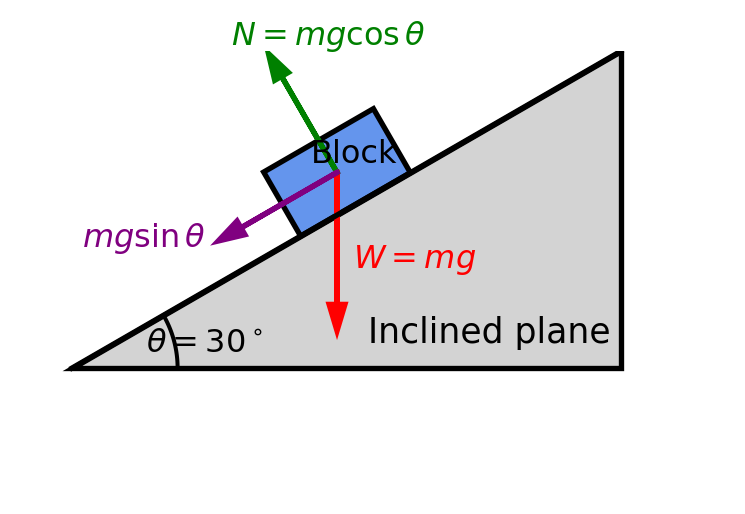
TipExample: Block on an inclined Plane
A block of mass \(10\,\text{kg}\) rests on a smooth inclined plane that makes an angle of \(30^\circ\) with the horizontal. Determine the normal force exerted by the plane on the block. Hence, state the reaction force exerted by the block on the plane.
Given:
\[ m=10\,\text{kg}, \qquad g=9.8\,\text{m/s}^2, \qquad \theta=30^\circ. \]
The weight of the block is
\[ W=mg=10(9.8)=98\,\text{N}. \]
The weight acts vertically downward. Since the plane is inclined, resolve the weight into two components:
Perpendicular to the plane: \[ W_\perp=mg\cos\theta. \]
Parallel to the plane: \[ W_\parallel=mg\sin\theta. \]
Since the block is at rest and the plane is smooth, the normal force is equal to the perpendicular component of the weight:
\[ N=mg\cos\theta. \]
Substituting the given values,
\[ N=98\cos30^\circ. \]
Using
\[ \cos30^\circ=0.866, \]
we obtain
\[ N=98(0.866)=84.9\,\text{N}. \]
According to Newton’s third law, every action force has an equal and opposite reaction force.
- Action: The inclined plane exerts a normal force of \(84.9\,\text{N}\) on the block.
- Reaction: The block exerts an equal and opposite normal force of \(84.9\,\text{N}\) on the inclined plane.
TipExample: Hanging Mass
When a mass is suspended from a rope, the mass exerts a downward force on the rope equal to its weight. The rope exerts an equal and opposite upward force on the mass.
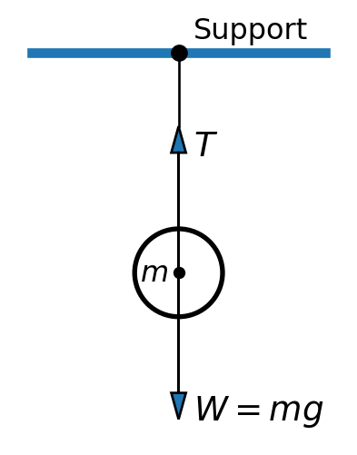
Figure 7 illustrates a mass suspended by a light string. The mass exerts a downward force (\(W=mg\)) on the string equal to its weight, and the string exerts an equal and opposite upward force (\(T\)) on the mass.
Other examples include:
Rocket Propulsion
A rocket expels gas at high speed from its engines. The reaction force exerted by the expelled gas on the rocket is equal in magnitude and opposite in direction to the force exerted by the rocket on the gas.
Swimming
When a swimmer pushes against the water with their hands and feet, the water exerts an equal and opposite force on the swimmer, propelling them forward.
Walking
When a person walks, they push the ground backward with their feet. The ground exerts an equal and opposite force on the person, propelling them forward.
Bird Flight
When a bird flaps its wings, it pushes the air downward and backward. The air pushes back on the bird with an equal and opposite force, allowing the bird to fly.
Boat Sailing
When a boat’s sail pushes against the wind, the wind pushes back on the sail with an equal and opposite force.
Car Driving
When a car’s tires push backward against the road, the road pushes forward on the tires with an equal and opposite force.
ImportantFree-Body Diagram
Free-body diagrams provide the starting point for deriving equations of motion. A free-body diagram should include
- all external forces,
- appropriate coordinate axes,
- force directions,
- known quantities and unknown reactions.
Free-body diagrams are essential for identifying forces before deriving equations of motion.
Limitations of Newtonian Mechanics
Although Newton’s laws describe many engineering systems with remarkable accuracy, they have limitations.
They are not suitable for
- atomic and subatomic particles, where quantum mechanics is required;
- objects moving at speeds close to the speed of light, where Einstein’s theory of relativity applies;
- extremely large astrophysical systems where relativistic effects become significant.
For most engineering applications involving ordinary speeds and dimensions, Newton’s laws provide an excellent mathematical model.
Conservation Principles
Most mathematical models are derived from conservation laws.
These state that certain physical quantities cannot be created or destroyed, although they may be transported or transformed.
The three fundamental conservation laws are
- Conservation of Mass
- Conservation of Energy
- Conservation of Momentum
Each conservation law has a common mathematical structure,
\[ \boxed{ \text{Accumulation} = \text{Input} - \text{Output} + \text{Generation}. } \]
This general balance equation provides the starting point for developing many engineering models.
Conservation of Mass
The principle of conservation of mass states that mass can neither be created nor destroyed.
For a control volume,
\[ \boxed{ \text{Rate of accumulation} = \text{Mass inflow} - \text{Mass outflow}. } \]
For a closed system,
\[ \boxed{ m=\text{constant}. } \]
In a steady-state flow through a control volume, the rate of mass accumulation is zero. Therefore, the mass inflow equals the mass outflow.
TipExample: Conservation of Mass in a Water Tank
Suppose water flows into a tank at a rate of \(5\ \mathrm{kg/s}\) and flows out at a rate of \(3\ \mathrm{kg/s}\). The rate of mass accumulation in the tank is \[ \frac{dm}{dt} = 5 - 3 = 2\ \mathrm{kg/s}. \]
TipExample: Conservation of Mass in a Pipe
Suppose water flows through a pipe with a cross-sectional area of \(A_1 = 0.1\ \mathrm{m^2}\) at a velocity of \(v_1 = 2\ \mathrm{m/s}\) and a density of \(\rho = 1000\ \mathrm{kg/m^3}\). The mass flow rate is \[ \dot{m} = \rho A_1 v_1 = 1000 \mathrm{kg/m^3} \times 0.1\ \mathrm{m^2} \times 2\ \mathrm{m/s} = 200\ \mathrm{kg/s}. \]
TipExample: Bank Account Analogy
Suppose you have a bank account with an initial balance of \(B_0\). If you deposit money at a rate of \(D(t)\) and withdraw money at a rate of \(W(t)\), the rate of change of your account balance is given by \[ \frac{dB}{dt} = D(t) - W(t). \]
If you deposit \(100\ \mathrm{dollars/week}\) and withdraw \(50\ \mathrm{dollars/week}\), the rate of change of your account balance is \[ \frac{dB}{dt} = 100 - 50 = 50\ \mathrm{dollars/week}. \]
To find the account balance at any time \(t\), you can integrate this equation over time, taking into account the initial balance \(B_0 = 500\).
\[ \begin{aligned} \int_{0}^{t} \frac{dB}{dt} dt &= \int_{0}^{t} (D(t) - W(t)) dt \\ &= \int_{0}^{t} 50 dt \\ &= 50t + B_0 \\ B(t) &= 50t + 500. \end{aligned} \]
TipExample: Conservation of Mass in Traffic Density
Suppose the traffic density on a road segment is \(\rho(x,t)\) (vehicles per unit length) and the traffic flow rate is \(q(x,t)\) (vehicles per unit time). The conservation of mass for traffic can be expressed as \[ \frac{\partial \rho}{\partial t} + \frac{\partial q}{\partial x} = 0, \] where \(q = \rho v\) and \(v\) is the average speed of vehicles. This equation states that the rate of change of traffic density at a point is equal to the negative of the spatial change in traffic flow.
Conservation of Momentum
The principle of conservation of momentum states that the total momentum of a closed system remains constant if no external forces act on it.
\[ \sum \mathbf P_\text{before} = \sum \mathbf P_\text{after} \]
where \(\mathbf P\) is the momentum of the system, and \(\mathbf P = m\mathbf v\) for a particle of mass \(m\) and velocity \(\mathbf v\); therefore, for a system of \(n\) particles,
\[ \begin{aligned} \mathbf P_1 + \mathbf P_2 + \ldots + \mathbf P_n &= \mathbf P_1' + \mathbf P_2' + \ldots + \mathbf P_n' \\ m_1 \mathbf v_1 + m_2 \mathbf v_2 + \ldots + m_n \mathbf v_n &= m_1' \mathbf v_1' + m_2' \mathbf v_2' + \ldots + m_n' \mathbf v_n' \end{aligned} \]
Momentum conservation forms the basis of
- rigid-body mechanics,
- fluid mechanics,
- impact analysis,
- vehicle dynamics.
TipExample: Conservation of Momentum in Collisions
Suppose two ice skaters, Skater A and Skater B, collide on an ice rink. Skater A has a mass of \(m_A = 50\ \mathrm{kg}\) and is moving with a velocity of \(v_A = 2\ \mathrm{m/s}\), while Skater B has a mass of \(m_B = 70\ \mathrm{kg}\) and is initially at rest. After the collision, they move together with a common velocity \(v_f\). Using the conservation of momentum:
\[ m_A v_A + m_B v_B = (m_A + m_B) v_f \]
Substituting the values:
\[ 50 \times 2 + 70 \times 0 = (50 + 70) v_f \]
\[ 100 = 120 v_f \]
\[ v_f = \frac{100}{120} \approx 0.833\ \mathrm{m/s} \]
TipExample: Conservation of Momentum in Billiard Ball Collision
A 0.2 kg billiard ball moving at \(v_{1x} = 5\ \mathrm{m/s}\) along the \(+X\) axis hits a second identical ball at rest (\(v_{2x} = 0\ \mathrm{m/s}\)). After the collision, the first ball deflects at an angle of \(30^\circ\) above the \(+X\) axis, and the second ball moves at an angle of \(60^\circ\) below the \(+X\) axis. Using conservation of momentum, we can find the final velocities of both balls \(v_1'\) and \(v_2'\).
We resolve the momentum into \(X\) and \(Y\) components. The conservation of momentum in the \(X\) direction gives \[ \begin{aligned} m_1 v_{1x} + m_2 v_{2x} &= m_1 v_{1}' \cos(30^\circ) + m_2 v_{2}' \cos(-60^\circ) \\ 0.2 \times 5 + 0.2 \times 0 &= 0.2v_{1}' \left(\frac{\sqrt{3}}{2}\right) + 0.2v_{2}' \left(\frac{1}{2}\right) \\ 5 &= 0.866v_{1}' + 0.5v_{2}' \qquad \text{(Eq. 1)} \end{aligned} \]
The conservation of momentum in the \(Y\) direction gives \[ \begin{aligned} m_1 v_{1y} + m_2 v_{2y} &= m_1 v_{1}' \sin(30^\circ) + m_2 v_{2}' \sin(-60^\circ) \\ 0.2 \times 0 + 0.2 \times 0 &= 0.2v_{1}' \left(\frac{1}{2}\right) + 0.2v_{2}' \left(-\frac{\sqrt{3}}{2}\right) \\ 0 &= 0.5v_{1}' - 0.866v_{2}' \\ v_{1}' &= 1.732v_{2}' \qquad \qquad \qquad \text{(Eq. 2)} \end{aligned} \]
Solve the system of equations (Eq. 1 and Eq. 2) to find the final velocities \(v_{1}'\) and \(v_{2}'\) of both balls after the collision.
Substituting Eq. 2 into Eq. 1: \[ \begin{aligned} 5 &= 0.866(1.732v_{2}') + 0.5v_{2}' \\ 5 &= 2v_{2}' \\ v_{2}' &= 2.5\ \mathrm{m/s} \end{aligned} \]
Substituting \(v_{2}'\) back into Eq. 2: \[ v_{1}' = 1.732 \times 2.5 \approx 4.33\ \mathrm{m/s} \]
Conservation of Energy
The First Law of Thermodynamics states that energy cannot be created or destroyed.
For a control volume,
\[ \frac{dE_\text{system}}{dt} = \dot{E}_\text{in} - \dot{E}_\text{out} + \dot{E}_\text{gen}, \] where
- \(\dfrac{dE_\text{system}}{dt}\) is the rate of change of energy stored within the system,
- \(\dot{E}_\text{in}\) is the rate of energy entering the system,
- \(\dot{E}_\text{out}\) is the rate of energy leaving the system, and
- \(\dot{E}_\text{gen}\) is the rate of energy generation within the system.
For systems with no energy generation, the equation simplifies to
\[ \frac{dE_\text{system}}{dt} = \dot{E}_\text{in} - \dot{E}_\text{out}. \]
TipExample: Conservation of Energy in a Chemical Reactor
A well-insulated chemical reactor receives reactants carrying thermal energy at a rate of \(120\ \mathrm{kW}\). The products leave the reactor carrying thermal energy at a rate of \(80\ \mathrm{kW}\). An exothermic chemical reaction occurring inside the reactor generates thermal energy at a rate of \(50\ \mathrm{kW}\). Determine the rate of change of energy stored in the reactor.
Using the conservation of energy equation,
\[ \begin{aligned} \frac{dE_{\text{system}}}{dt} &= \dot{E}_{\text{in}} - \dot{E}_{\text{out}} + \dot{E}_{\text{generated}}\\ &= 120 - 80 + 50 \\ &= 90\ \mathrm{kW}. \end{aligned} \]
The energy stored in the reactor increases at a rate of 90 kW.
TipExample: Steady-State Energy Balance for a Gas Turbine
A gas turbine operates continuously at steady state. Air enters the turbine system carrying thermal energy at a rate of \(\dot{E}_{\text{in}} = 6.0\ \mathrm{MW}\). Fuel combustion inside the system generates thermal energy at a rate of \(\dot{E}_{\text{generated}} = 18.0\ \mathrm{MW}\).
The exhaust gases leave the turbine carrying thermal energy at a rate of \(\dot{E}_{\text{exhaust}} = 20.5\ \mathrm{MW}\). The turbine produces shaft work at a rate of \(\dot{W}_{\text{shaft}} = 3.0\ \mathrm{MW}\) and loses heat to the surroundings at a rate of \(\dot{Q}_{\text{loss}} = 0.5\ \mathrm{MW}\). Verify that the turbine operates at steady state.
At steady state,
\[ \frac{dE_{\text{system}}}{dt}=0 \quad \text{or} \quad \dot{E}_{\text{in}} + \dot{E}_{\text{generated}} = \dot{E}_{\text{out}}. \]
The total energy leaving the system is
\[ \dot{E}_{\text{out}} = \dot{E}_{\text{exhaust}} + \dot{W}_{\text{shaft}} + \dot{Q}_{\text{loss}} = 24.0\ \mathrm{MW}. \]
Substituting into the energy balance,
\[ \begin{aligned} \frac{dE_{\text{system}}}{dt} &= \dot{E}_{\text{in}} - \dot{E}_{\text{out}} + \dot{E}_{\text{generated}}\\ &= 6.0 - 24.0 + 18.0 = 0. \end{aligned} \]
Since the rate of energy change is zero, the turbine is operating at steady state.
Note: In practice, a continuously operating gas turbine is designed to operate at steady state to ensure no damage occurs to the turbine components due to excessive energy accumulation.
TipExample: Energy Balance for a Gas Turbine Combustor
A gas turbine combustor operates at steady state. Air enters the combustor at a mass flow rate of \(18\ \mathrm{kg/s}\) with a specific enthalpy of \(320\ \mathrm{kJ/kg}\). Fuel enters at a mass flow rate of \(0.40\ \mathrm{kg/s}\) with a heating value of \(43\,000\ \mathrm{kJ/kg}\). Combustion converts the chemical energy of the fuel into thermal energy within the combustor.
The combustion products leave the combustor at a mass flow rate of \(18.4\ \mathrm{kg/s}\) with a specific enthalpy of \(1\,150\ \mathrm{kJ/kg}\). Heat is lost from the combustor to the surroundings at a rate of \(0.80\ \mathrm{MW}\).
Neglect changes in kinetic and potential energy. Determine whether the combustor is accumulating energy or operating at steady state.
Step 1. Determine the rate of energy entering.
The incoming air contributes
\[ \dot{E}_{\text{air}} = \dot{m}_{\text{air}}h_{\text{air}} = (18)(320) = 5760\ \mathrm{kW}. \]
Step 2. Determine the rate of energy leaving.
The combustion products carry away
\[ \dot{E}_{\text{products}} = (18.4)(1150) = 21160\ \mathrm{kW}. \]
Heat loss to the surroundings is \(\dot{Q}_{\text{loss}} = 800\ \mathrm{kW}.\)
\[ \dot{E}_{\text{out}} = 21160 + 800 = 21960\ \mathrm{kW}. \]
Step 3. Determine the energy generated.
The combustion of fuel releases
\[ \dot{E}_{\text{generated}} = \dot{m}_{\text{fuel}}(\text{Heating Value}) = (0.40)(43000) = 17200\ \mathrm{kW}. \]
Step 4. Apply the conservation of energy equation.
\[ \frac{dE_{\text{system}}}{dt} = 5760 - 21960 + 17200\\ = 1000\ \mathrm{kW} = 1.0\ \mathrm{MW}. \]
Since the rate of energy change is positive, the combustor is accumulating energy at a rate of \(1.0\ \mathrm{MW}\).
Note: If this condition persisted indefinitely, temperatures and stresses would continue to rise, which could eventually damage the equipment. Therefore, a sustained positive accumulation is not a normal operating condition.
Applications of Newton’s Laws
Projectile Motion
Projectile motion provides an excellent example of how a physical problem can be formulated as a mathematical model using Newton’s laws. By identifying the forces acting on the projectile and applying Newton’s Second Law, we obtain a system of ordinary differential equations describing its motion.
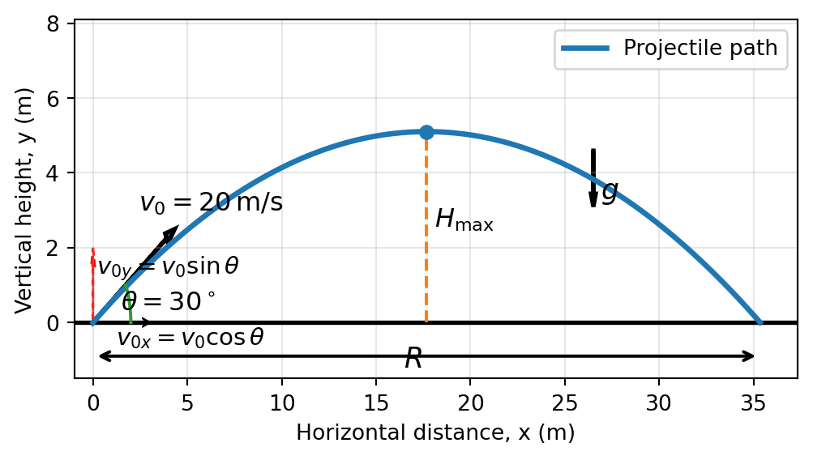
TipExample: Projectile Motion of a Ball
A ball is thrown with an initial velocity of \(v_0 = 20\ \mathrm{m/s}\) at an angle of \(\theta = 30^\circ\) above the horizontal. Determine the trajectory of the ball, its maximum height, and the time it takes to hit the ground.
Given
\[ v_0 = 20\ \mathrm{m/s}, \qquad \theta = 30^\circ, \qquad g = 9.8\ \mathrm{m/s^2}. \]
Resolve the initial velocity into horizontal and vertical components:
\[ v_{0x}=v_0\cos\theta \quad \text{and} \quad v_{0y}=v_0\sin\theta \]
Substituting,
\[ v_{0x}=20\cos30^\circ=20(0.866)=17.32\ \mathrm{m/s} \]
and
\[ v_{0y}=20\sin30^\circ=20(0.5)=10\ \mathrm{m/s}. \]
Trajectory of the Ball
The horizontal and vertical positions are
\[ x(t)=v_{0x}t \quad \text{and} \quad y(t)=v_{0y}t-\frac12gt^2. \]
Thus,
\[ x(t)=17.32t \quad \text{and} \quad y(t)=10t-4.9t^2. \]
To write the trajectory as \(y\) in terms of \(x\), use
\[ t=\frac{x}{17.32}. \]
Substitute into \(y(t)\):
\[ y=10\left(\frac{x}{17.32}\right) -4.9\left(\frac{x}{17.32}\right)^2. \]
Therefore,
\[ y=0.577x-0.0163x^2 \]
Maximum Height
The maximum height is
\[ H=\frac{v_{0y}^2}{2g}. \]
Substituting,
\[ H=\frac{10^2}{2(9.8)} =\frac{100}{19.6}=5.10\ \mathrm{m}. \]
Time to Hit the Ground
The ball hits the ground when
\[ y(t)=10t-4.9t^2=0. \]
Factor:
\[ t(10-4.9t)=0. \]
Thus,
\[ t=0 \quad \text{and} \quad 10-4.9t=0. \]
Ignoring \(t=0\), the time of flight is
\[ t=\frac{10}{4.9}=2.04\ \mathrm{s}. \]
Uniform Circular Motion
Consider a particle of mass \(m\) moving in a circle of radius \(r\) at a constant speed \(v\). The particle experiences a centripetal acceleration directed toward the center of the circle, given by
\[ a_c = \frac{v^2}{r}. \]
The centripetal force required to keep the particle moving in a circle is
\[ F_c = m a_c = m \frac{v^2}{r}. \]
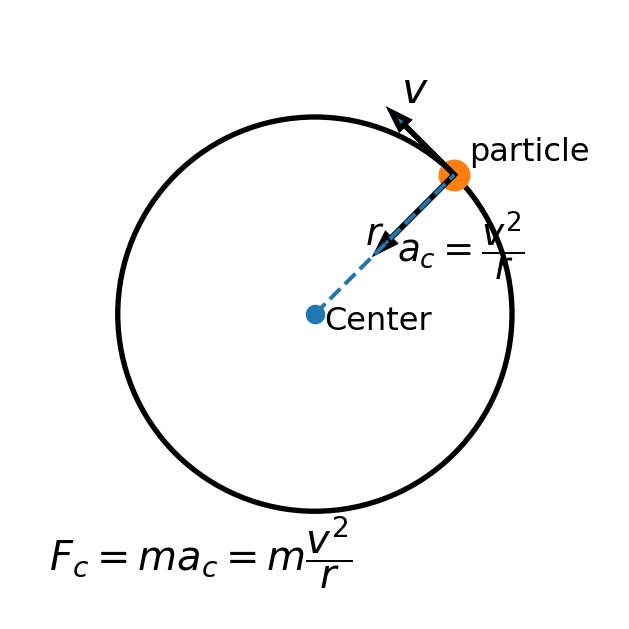
TipExample: Car Turning Around a Circular Curve
A car of mass \(1200\,\mathrm{kg}\) travels around a circular curve of radius \(50\,\mathrm{m}\) at a constant speed of \(15\,\mathrm{m/s}\). Determine the centripetal acceleration and the centripetal force acting on the car.
The centripetal acceleration is
\[ a_c=\frac{v^2}{r}. \]
Substituting,
\[ a_c=\frac{15^2}{50} =\frac{225}{50} =4.5\ \mathrm{m/s^2}. \]
The centripetal force is
\[ F_c=ma_c. \]
Hence,
\[ F_c=(1200)(4.5) =5400\ \mathrm{N}. \]
Moving in a Circle with Friction
When a vehicle moves in a circular path, friction between the tires and the road provides the necessary centripetal force to keep the vehicle moving in a circle. The maximum speed at which a vehicle can safely navigate a curve without skidding is determined by the coefficient of static friction between the tires and the road.
TipExample: Maximum Speed on a Curved Road
A car of mass \(1000\ \mathrm{kg}\) is traveling around a circular curve of radius \(30\ \mathrm{m}\). The coefficient of static friction between the tires and the road is \(\mu_s = 0.6\). Determine the maximum speed at which the car can safely navigate the curve without skidding.
The maximum static friction force that can act on the car is given by
\[ f_{\text{max}} = \mu_s N, \] where \(N\) is the normal force. On a flat road, the normal force is equal to the weight of the car, \(N = mg\). Therefore,
\[ f_{\text{max}} = \mu_s mg. \]
The maximum speed is determined by equating the centripetal force to the maximum static friction force:
\[ f_{\text{max}} = \frac{mv^2}{r}. \]
Equating the two expressions for the maximum force, we get
\[ \mu_s mg = \frac{mv^2}{r}. \]
Solving for the maximum speed, we get
\[ v_{\text{max}} = \sqrt{\mu_s g r}. \]
Substituting the given values,
\[ v_{\text{max}} = \sqrt{0.6 \cdot 9.8 \cdot 30} \approx 13.3\ \mathrm{m/s}. \]
Hence, the maximum speed at which the car can safely navigate the curve without skidding is approximately \(13.3\ \mathrm{m/s}\).
Object moving in a elevator
When an object is moving in an elevator, the forces acting on it include its weight and the normal force exerted by the floor of the elevator. The apparent weight of the object can change depending on the acceleration of the elevator.
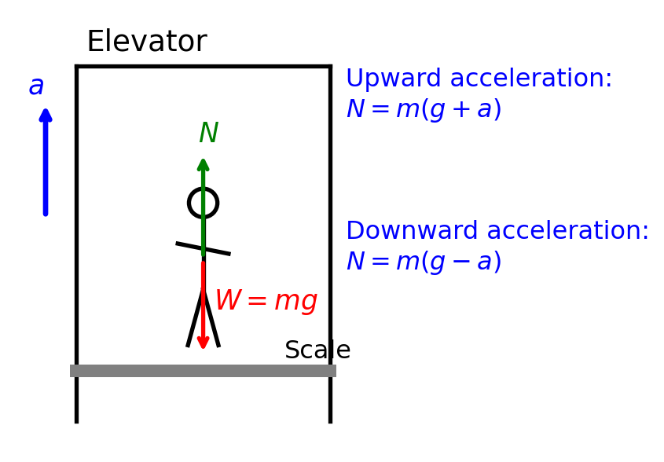
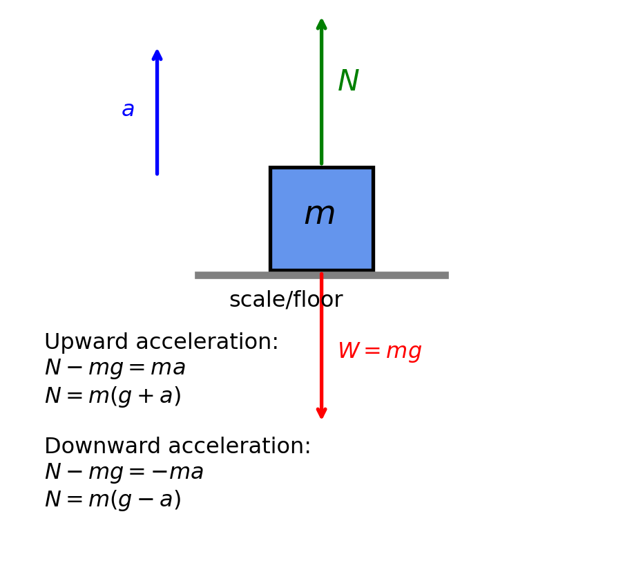
TipExample: Apparent Weight in an Elevator
A person of mass \(70\ \mathrm{kg}\) is standing on a scale in an elevator. Determine the reading on the scale (apparent weight) when the elevator is:
- Moving upward with an acceleration of \(2\ \mathrm{m/s^2}\).
- Moving downward with an acceleration of \(2\ \mathrm{m/s^2}\).
Given:
\[ m=70\ \mathrm{kg}, \qquad g=9.8\ \mathrm{m/s^2}, \qquad a=2\ \mathrm{m/s^2}. \]
The apparent weight is the normal force \(N\) exerted by the scale on the person.
1. Elevator Moving Upward
When the elevator accelerates upward, the forces acting on the person are:
- Normal force, \(N\), acting upward.
- Weight, \(W=mg\), acting downward.
Applying Newton’s second law,
\[ \sum F_y = ma. \]
Taking upward as the positive direction,
\[ N-mg=ma. \]
Hence,
\[ N=m(g+a). \]
Substituting the given values,
\[ N=70(9.8+2). \]
Therefore, the scale reads
\[ N=70(11.8)=826\ \mathrm{N}. \]
2. Elevator Moving Downward
When the elevator accelerates downward, the forces remain the same, but the acceleration is downward.
Taking upward as the positive direction,
\[ N-mg=-ma. \]
Hence,
\[ N=m(g-a). \]
Substituting,
\[ N=70(9.8-2). \]
Therefore, the scale reads
\[ N=70(7.8)=546\ \mathrm{N}. \]
| Elevator Motion | Apparent Weight |
|---|---|
| Accelerating upward at \(2\ \mathrm{m/s^2}\) | \(826\ \mathrm{N}\) |
| Accelerating downward at \(2\ \mathrm{m/s^2}\) | \(546\ \mathrm{N}\) |
- When the elevator accelerates upward, the apparent weight increases because the scale must provide an additional upward force.
- When the elevator accelerates downward, the apparent weight decreases because less upward force is required.
- If the elevator moves with constant velocity (\(a=0\)), the apparent weight equals the true weight:
\[ N=mg=70(9.8)=686\ \mathrm{N}. \]
Smooth Pulleys Motion
A mass of \(m_2\) kg is placed on a smooth horizontal table, and connected by a light inextensible string passing over a small smooth pulley at the edge to a mass of \(m_1\;kg\) hanging freely.
Assume the tension in the string is \(T\). Directions of all forces acting on \(m_1\) is downward, and on \(m_2\) is horizontal. The acceleration of the system is \(a\).
the equation of motion for m1 by using Newton’s 2nd law is
\[ m_1g-T=m_1a \]
the equation of motion for m2 by using Newton’s 2nd law is
\[ T=m_2a \]
The equations for \(m_1\) and \(m_2\) constitute a system of two equations with two unknowns tension force \(T\) and acceleration \(a\).
Solve the system of equations to find the acceleration \(a\) and tension \(T\) in the string.
\[ a=\frac{m_1g}{m_1+m_2}, \qquad T=\frac{m_1m_2g}{m_1+m_2}. \]
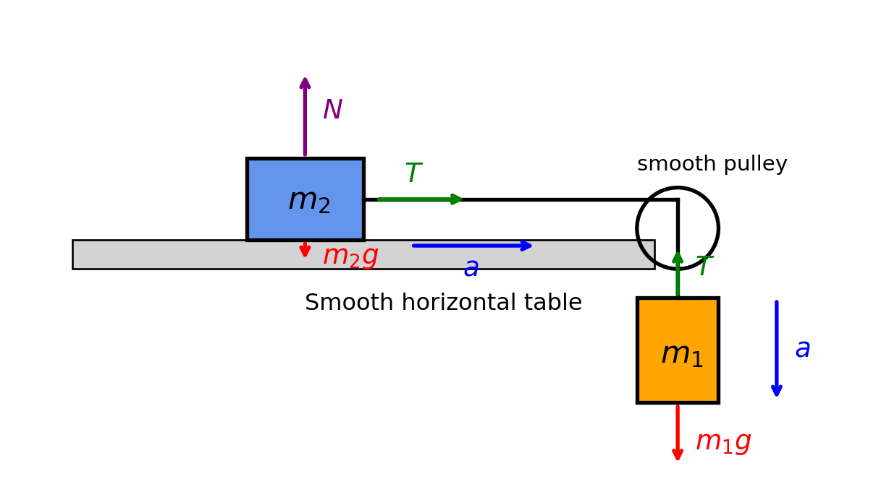
TipExample: Motion of Two Masses Connected by a Smooth Pulley
A mass of \(m_1=4\,\mathrm{kg}\) hangs freely over the edge of a smooth table and is connected by a light inextensible string passing over a smooth pulley to a mass of \(m_2=6\,\mathrm{kg}\) resting on the table. Taking \(g=9.8\ \mathrm{m/s^2}\) and assuming the pulley and string are ideal, determine:
- The acceleration of the system.
- The tension in the string.
Step 1: Draw the Free-Body Diagrams
For the hanging mass \(m_1\):
- Weight: \(m_1g\) acting downward.
- Tension: \(T\) acting upward.
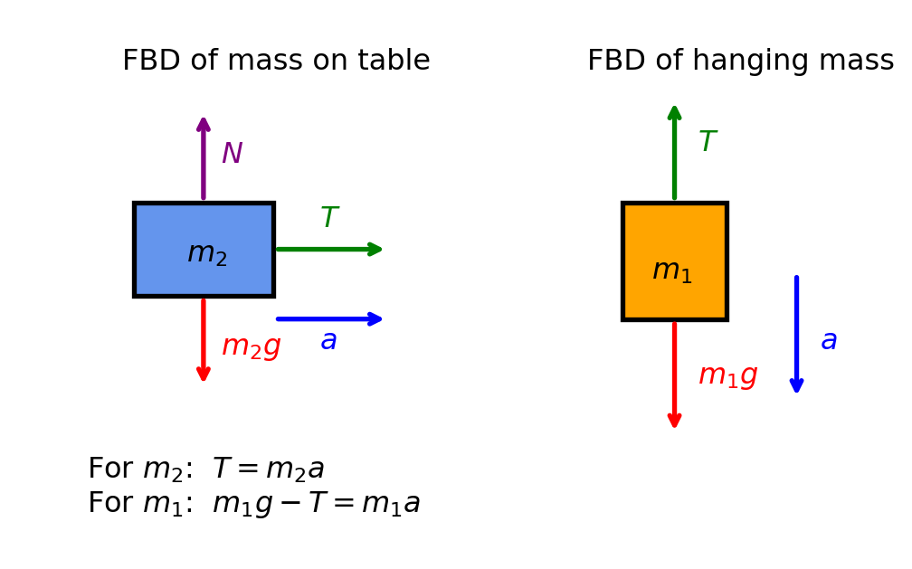
Since the mass accelerates downward,
\[ m_1g-T=m_1a. \]
For the mass \(m_2\) on the table:
- Tension: \(T\) acting horizontally.
- The table is smooth, so there is no friction.
Applying Newton’s second law,
\[ T=m_2a. \]
Step 2: Solve for the Acceleration
Substitute
\[ T=m_2a \]
into
\[ m_1g-T=m_1a. \]
Then,
\[ m_1g-m_2a=m_1a. \]
Hence,
\[ m_1g=(m_1+m_2)a. \]
Therefore,
\[ a=\frac{m_1g}{m_1+m_2}. \]
Substituting the given values yields the acceleration of the system
\[ a=\frac{4(9.8)}{4+6} =\frac{39.2}{10} =3.92\ \mathrm{m/s^2}. \]
Step 3: Solve for the Tension
Using
\[ T=m_2a, \]
we obtain the tension in the string
\[ T=(6)(3.92) =23.52\ \mathrm{N}. \]
Verification
Using the formula
\[ T=\frac{m_1m_2g}{m_1+m_2}, \]
we have
\[ T = \frac{(4)(6)(9.8)}{4+6} = \frac{235.2}{10} = 23.52\ \mathrm{N}, \]
which agrees with the previous result.
Inclined Plane with Friction
When a block slides down an inclined plane, the forces acting on it include its weight, the normal force from the plane, and the frictional force opposing the motion. The component of the weight parallel to the incline causes the block to accelerate down the slope.
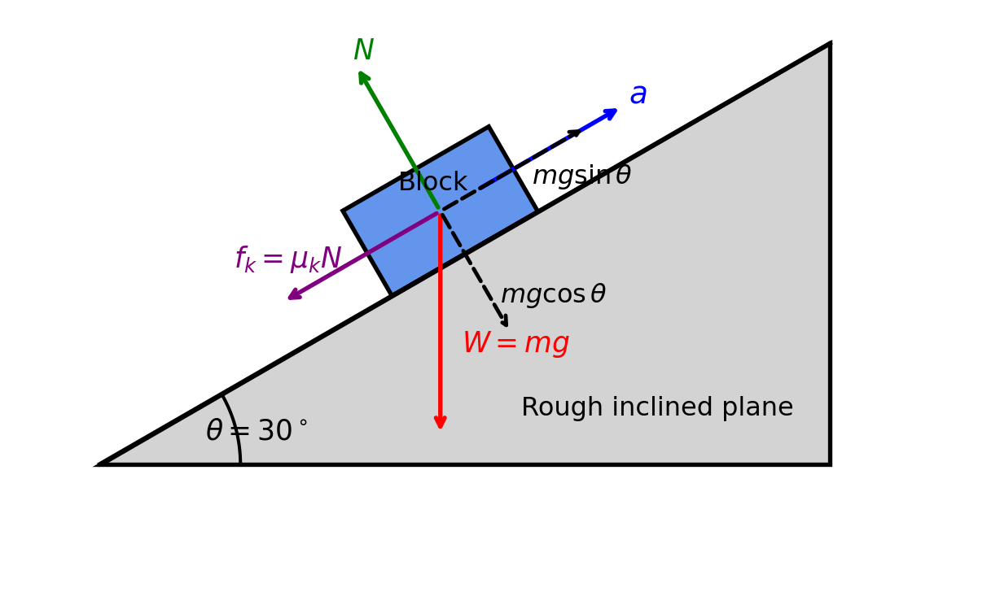
TipExample: Block Sliding Down an Inclined Plane with Friction
A block of mass \(5\,\mathrm{kg}\) is placed on a rough inclined plane that makes an angle of \(30^\circ\) with the horizontal. The coefficient of kinetic friction between the block and the plane is \(\mu_k=0.20\). Take $ g=9.8 $ and determine:
- The acceleration of the block as it slides down the incline.
- The normal force acting on the block.
Step 1: Draw the Free-Body Diagram
The forces acting on the block are:
- Weight: \(W=mg\), acting vertically downward.
- Normal force: \(N\), acting perpendicular to the plane.
- Frictional force: \(f_k=\mu_kN\), acting up the plane, opposite to the motion.
Resolve the weight into components:
- Parallel to the incline:
\[ W_\parallel=mg\sin\theta. \]
- Perpendicular to the incline:
\[ W_\perp=mg\cos\theta. \]
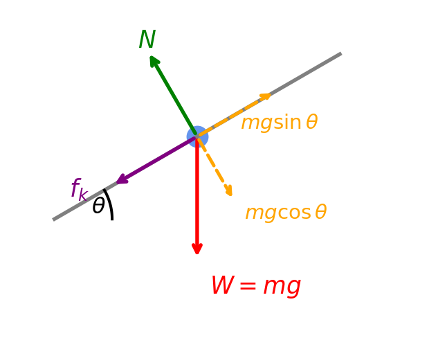
Step 2: Calculate the Normal Force
Since there is no acceleration perpendicular to the plane,
\[ N=mg\cos\theta. \]
Substituting,
\[ N=(5)(9.8)\cos30^\circ. \]
Since \(\cos30^\circ=0.866,\) we obtain
\[ N=49(0.866)=42.43\ \mathrm{N}. \]
Step 3: Calculate the Frictional Force
Using
\[ f_k=\mu_kN, \]
we obtain
\[ f_k=(0.20)(42.43) =8.49\ \mathrm{N}. \]
Step 4: Apply Newton’s Second Law
The net force along the incline is
\[ mg\sin\theta-f_k=ma. \]
Substituting the values,
\[ (5)(9.8)\sin30^\circ-8.49 =5a. \]
Since \(\sin30^\circ=0.5,\) we have
\[ 24.5-8.49=5a \Rightarrow a=\frac{16.01}{5} =3.20\ \mathrm{m/s^2}. \]
Exercises
Question 1
Describe (sketch) the locus of a particle whose position vector is given in (a) and (b). Find also the velocity and acceleration of the particle and show that their magnitudes are both constant.
\(\vec{r}(t)=\left(a\sin(\omega t),\;a\cos(\omega t),\;0\right),\) where \(a\) and \(\omega\) are constants.
\(\vec{r}(t)=\left(a\sin(\omega t),\;a\cos(\omega t),\;bt\right),\) where \(a\), \(b\), and \(\omega\) are constants.
Question 2
Find the velocity and acceleration of a particle moving along various loci using parametric equations, and plot the velocity and acceleration vectors as functions of time.
\(\vec{r}(t)=(2+3t,\;1+4t,\;0).\)
\(\vec{r}(t)=\left(4\cos(2t),\;4\sin(2t),\;0\right).\)
\(\vec{r}(t)=\left(3\cos t,\;3\sin t,\;2t\right).\)
\(\vec{r}(t)=\left(2t,\;5t-\frac{1}{2}(9.81)t^2,\;0\right).\)
\(\vec{r}(t)=\left(6\cos t,\;4\sin t,\;0\right).\)
\(\vec{r}(t)=\left(2\cosh t,\;\sinh t,\;0\right).\)
Question 3
A particle is moving on a straight line with constant acceleration \(a\). If \(x\) is the distance from some fixed point on the straight line, show that the equation \[ \frac{d^2x}{dt^2}=a \]
can be written as \(v\frac{dv}{dx}=a,\) where \(v\) is the particle’s speed. If \(v=v_0\) at \(x=0,\) integrate this equation and show that \(v^2=v_0^2+2ax.\)
Question 4
A man 70 kg, stands on the floor of a lift.
- The force acting on the mass includes the gravitational force and the reaction from the floor. Show the directions of all forces acting on the mass. In the coordinate shown, what is the total force acting on the mass?
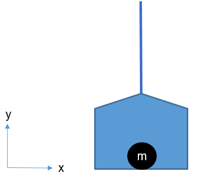
Suppose the lift moves upwards with acceleration of 4 \(m/s^2\). Use Newton’s 2nd law to calculate the reaction of the floor (the force acting on the man from the floor).
Suppose the lift moves downwards with acceleration of 4 \(m/s^2\). Find the reaction of the floor.
Question 5
A catapult projects a stone in the normal direction to a playground which slopes at the angle of \(10^\circ\) to the horizontal. The initial speed of the stone is 18 \(m/s\). Ignoring air resistance, calculate the range parallel to the playground.
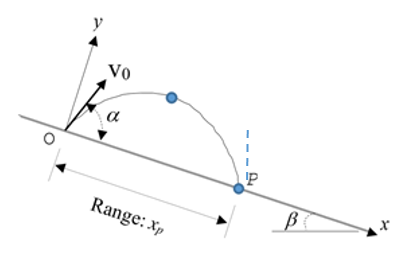
Question 6
From Question 5, suppose that the playground is inclined at an angle \(\alpha\) to the horizontal. If the stone were to be fired with velocity \(v\) at an acute angle \(\beta\) to the playground, in the vertical plane through the line of greatest slope, find the maximum range parallel to the playground.
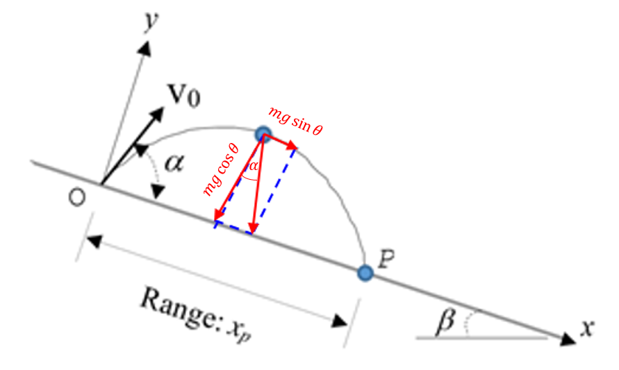